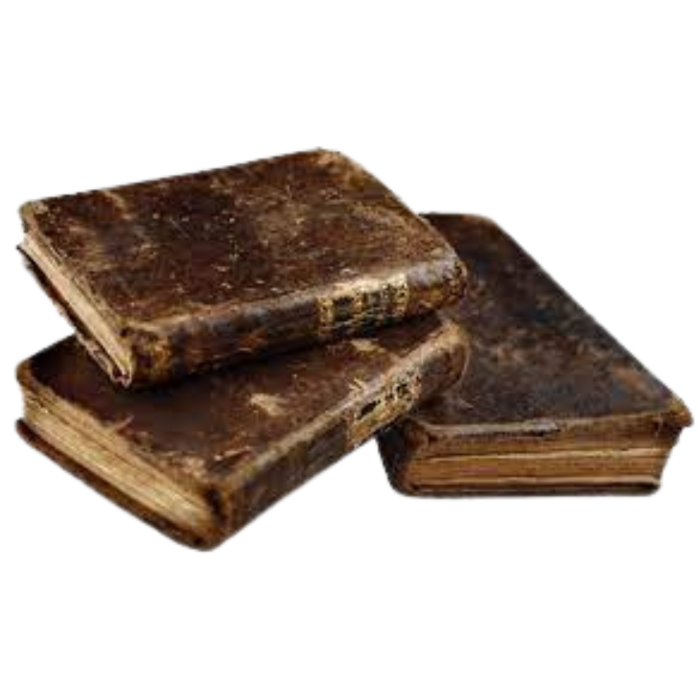
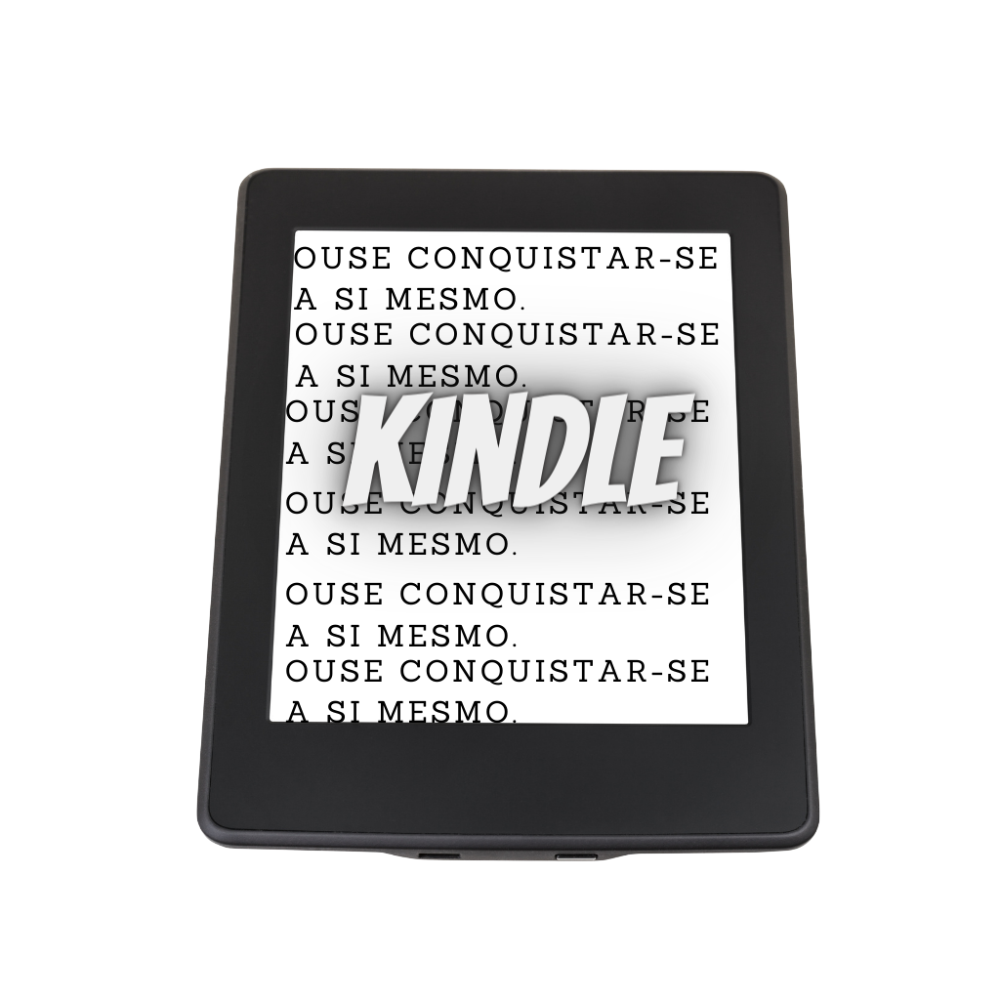
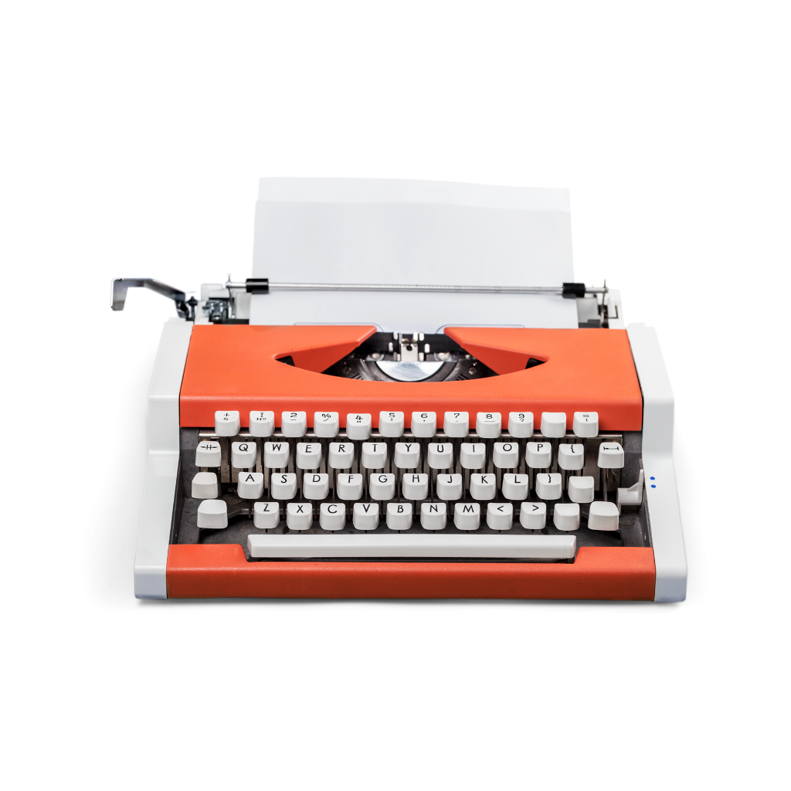

História do Livro
A História do Livro é tão antiga quanto a história da escrita. Desde 6 mil anos atrás já surgiam os primeiros “protótipos” de livros.
O que foi modificado até o objeto livro que conhecemos hoje foi o “suporte” a partir das inúmeras inovações técnicas, escolhido para grafar as letras do alfabeto.
Ou seja, antes era gravado pelos povos antigos (babilônicos, egípcios, gregos, sumérios, etc.) em placas de argila, cascas de árvore, pedra, madeira, barro, folhas de palmeiras.
Posteriormente o suporte para a impressão dos textos, foi o papiro (planta mais resistente), pergaminhos (pele de animal), códices (manuscritos de madeira), folhas de papel, até chegarem na era digital dos livros eletrônicos.
Resumo
No Egito antigo, os “escribas” ou escrivães eram pessoas responsáveis pela leitura e produção dos textos nos papiros, espécies de plantas usadas desde 2500 a.C., as quais, por sua vez, constituíam um grande rolo de folhas pregadas umas às outras.
Foi por esse motivo, do demasiado volume, que surgiram os pergaminhos, suportes de peles de animais (carneiro, cabra, ovelha, etc.), muito utilizados pelos “monges copistas” da Idade Média.
O livro, um produto intelectual, surgiu da necessidade dos povos de guardar o conhecimento e passa-los de geração em geração.
É um objeto de enorme valor cultural e histórico, muito importante para a disseminação do conhecimento no mundo.
Nesse sentido, vale lembrar que na Idade Média os livros eram considerados objetos de imenso valor e por isso, acessível somente para uma pequena parte da população (nobreza e o clero).
Além disso, muitos livros eram considerados impróprios pela Igreja Católica, que dominava o cenário do medievo. Essas obras foram reunidas num livro denominado “Index Librorum Prohibitorum” ou “Índice dos Livros Proibidos”.
Com isso, a maioria dos livros eram de religião, enquanto outros de história, astronomia, literatura e filosofia, ficavam restrito a um número menor ainda.
Nesse contexto, importante destacar que a maioria das pessoas, não sabiam ler ou escrever, o que dificultava ainda mais a disseminação desse conhecimento, guardado nas bibliotecas a “sete chaves”.
Um fato muito importante que ocorreu em fins da Idade Média, ou ainda, da passagem da Idade Média para a Idade Moderna, foi o surgimento da Imprensa, em meados do século XV.
Na Europa, fatores como o declínio do sistema feudal, o surgimento da burguesia, a Reforma Protestante, foram afastando as imposições da Igreja e abrindo um leque de possibilidades para as pessoas, que ao mesmo tempo, se sentiam impossibilitadas de expressarem suas opiniões.
Esses acontecimentos impulsionaram a elaboração de métodos de impressão tal qual a prensa móvel, (já descoberta na China por Pi Sheng) pelo alemão Johannes Gutenberg (1398-1468).
A partir de sua técnica, aperfeiçoada dos asiáticos, Gutenberg produziu o primeiro “livro” na Europa denominado “Bíblia de Gutemberg”, (entre 1400 e 1456), com tiragem de 180 exemplares.
Esse sistema de impressão, jamais antes visto pela população europeia, foi o fulcro necessário para permitir o acesso aos livros ao restante da população.
A partir daí, a popularização do livro ganhou força no mundo inteiro, considerado atualmente um dos objetos mais importantes de acesso ao conhecimento. Com o tempo, foram surgindo livros de didáticos, livros de estórias infantis, livros de poesias, dentre outros.
Hoje, quando entramos numa biblioteca ou livraria, é difícil de imaginar que se estivéssemos na Idade Média, estaríamos adentrando um mundo quase intocável, mágico e místico.
No entanto, é muito complicado para nós, seres do século XXI, pensarmos nesse contexto, uma vez que a popularização do livro ganhou proporções nunca antes vistas.
História do Livro no Brasil
No Brasil, o livro foi introduzido no período colonial pelos portugueses, sobretudo, pelos jesuítas, figuras que participaram da catequização indígena, bem como da introdução da educação formal no país.
Já no século XX, o escritor e editor pré-moderno Monteiro Lobato foi responsável pela maior divulgação dos livros no país, segundo ele: “Um país é formado por homens e livros.”
Livro Eletrônico (E-books)
Com a acelerada revolução da era digital, o livro adquiriu uma “nova” cara, ou seja, foi formado por outro suporte: as telas de computadores.
Ainda que essa nova apresentação, preocupem muitos os “amantes dos livros” (bibliófilos), há os que acreditam que o livro, tal qual o conhecemos nas bibliotecas, permanecerão por muito tempo.